Problem 1
Exploring the Central Limit Theorem through Simulations
Motivation
The Central Limit Theorem (CLT) is a foundational principle in probability and statistics. It states that the sampling distribution of the sample mean becomes approximately normal as the sample size increases, regardless of the original population distribution—provided the samples are independent and identically distributed.
This property is essential for statistical inference and underpins many techniques in hypothesis testing, confidence intervals, and quality control.
In this project, we explore the CLT through hands-on simulations using Python.
Mathematical Expression of the CLT
Let \(X_1, X_2, \ldots, X_n\) be a random sample of size \(n\) drawn from a population with:
-
Mean \(\mu\)
-
Standard deviation \(\sigma\)
Then the sampling distribution of the sample mean \(\bar{X}\) approaches a normal distribution as \(n \to \infty\):
This means:
-
The mean of the sampling distribution is \(\mu\)
-
The variance is \(\frac{\sigma^2}{n}\)
-
The standard deviation (called the standard error) is \(\frac{\sigma}{\sqrt{n}}\)
Simulation Setup
We investigate the CLT using the following population distributions:
-
Uniform Distribution: All values within a range are equally likely.
-
Exponential Distribution: A skewed distribution modeling time between events.
-
Binomial Distribution: Discrete distribution representing success/failure outcomes.
Libraries and Configuration
import numpy as np
import matplotlib.pyplot as plt
import seaborn as sns
# Plot styling
sns.set(style="whitegrid")
np.random.seed(42)
# Configuration
population_size = 100_000
sample_sizes = [5, 10, 30, 50]
num_samples = 1000
Uniform Distribution
Population Overview
# Generate uniform distribution
uniform_population = np.random.uniform(low=0, high=10, size=population_size)
# Plot population
sns.histplot(uniform_population, bins=50, kde=True)
plt.title("Uniform Population Distribution")
plt.xlabel("Value")
plt.ylabel("Frequency")
plt.show()
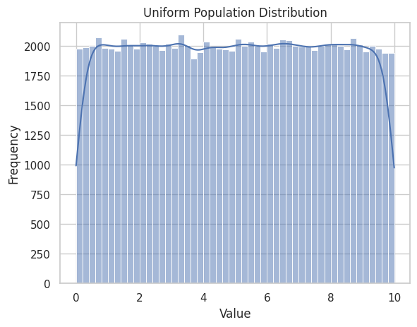
Sampling Distributions
for n in sample_sizes:
means = [np.mean(np.random.choice(uniform_population, size=n)) for _ in range(num_samples)]
sns.histplot(means, bins=30, kde=True)
plt.title(f"Sample Means (Uniform, n={n})")
plt.xlabel("Sample Mean")
plt.ylabel("Frequency")
plt.show()
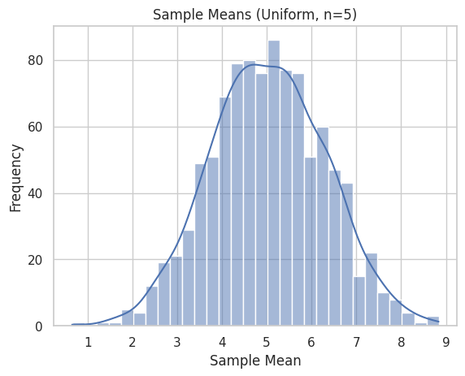
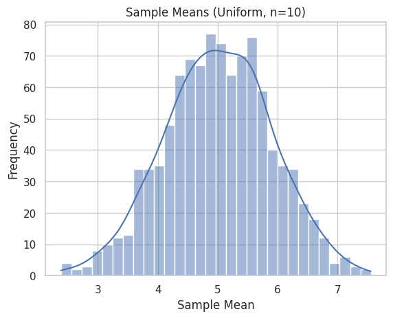 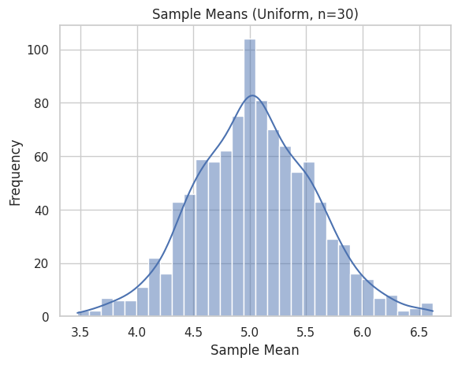 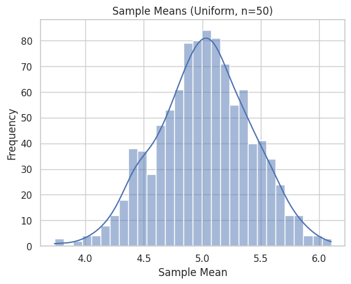
Exponential Distribution
Population Overview
# Generate exponential distribution
exponential_population = np.random.exponential(scale=1.0, size=population_size)
sns.histplot(exponential_population, bins=50, kde=True)
plt.title("Exponential Population Distribution")
plt.xlabel("Value")
plt.ylabel("Frequency")
plt.show()
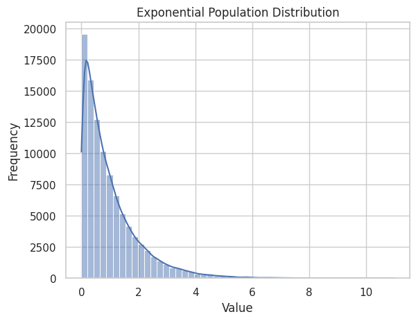
Sampling Distributions
for n in sample_sizes:
means = [np.mean(np.random.choice(exponential_population, size=n)) for _ in range(num_samples)]
sns.histplot(means, bins=30, kde=True)
plt.title(f"Sample Means (Exponential, n={n})")
plt.xlabel("Sample Mean")
plt.ylabel("Frequency")
plt.show()
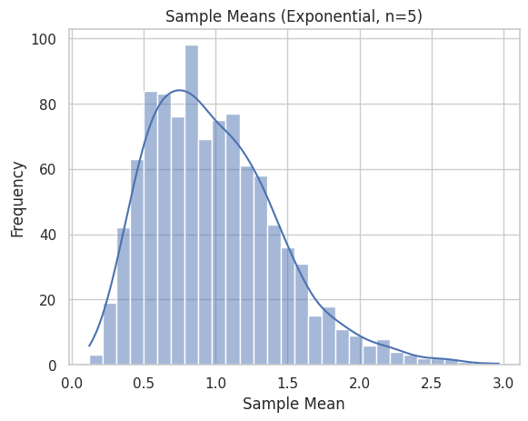 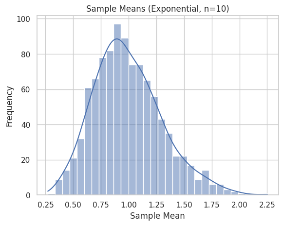 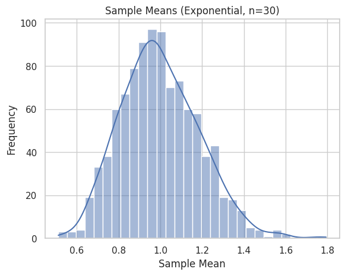 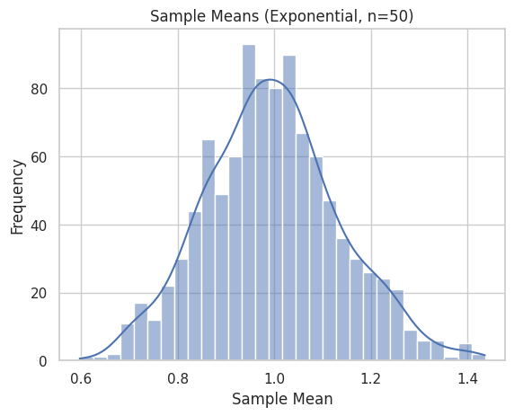
Binomial Distribution
Population Overview
# Generate binomial distribution
binomial_population = np.random.binomial(n=10, p=0.5, size=population_size)
sns.histplot(binomial_population, bins=11)
plt.title("Binomial Population Distribution")
plt.xlabel("Value")
plt.ylabel("Frequency")
plt.show()
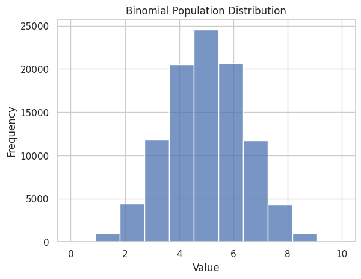
Sampling Distributions
for n in sample_sizes:
means = [np.mean(np.random.choice(binomial_population, size=n)) for _ in range(num_samples)]
sns.histplot(means, bins=30, kde=True)
plt.title(f"Sample Means (Binomial, n={n})")
plt.xlabel("Sample Mean")
plt.ylabel("Frequency")
plt.show()
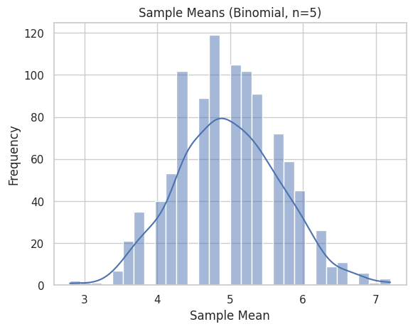 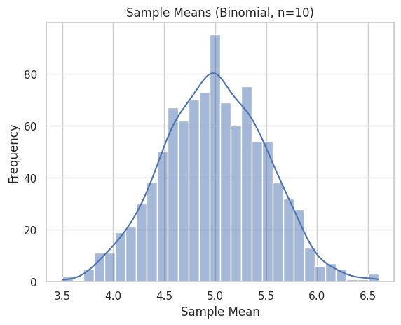 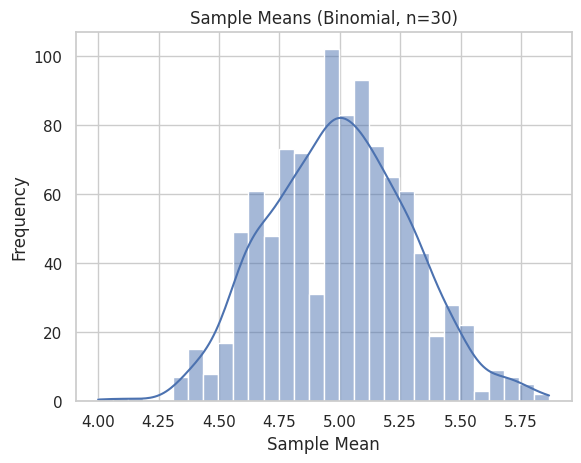 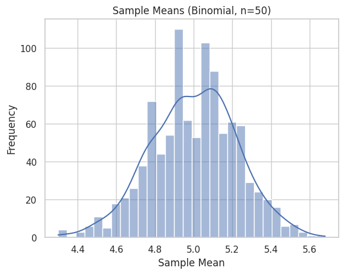
Observations
-
As the sample size increases, the sampling distribution of the mean approaches a normal shape.
-
This convergence occurs regardless of the population distribution:
-
For skewed distributions like exponential, larger sample sizes are needed.
-
For symmetric distributions like uniform or binomial, convergence is faster.
-
The spread (standard deviation) of the sampling distribution decreases with larger samples.
Real-World Applications
The CLT is used in:
-
Estimating population parameters when the population distribution is unknown.
-
Quality control in industrial settings using sample-based inspections.
-
Finance for modeling average returns and risks.
-
Scientific research where sample statistics are used for inference.
Tools and Technologies
-
NumPy: Random data generation and statistical operations
-
Matplotlib & Seaborn: Plotting and visualization
Conclusion
Through these simulations, we observed the Central Limit Theorem in action: no matter the shape of the original distribution, the distribution of the sample mean becomes approximately normal as the sample size increases.
This powerful result explains the ubiquity of the normal distribution in statistics and confirms why the CLT is a cornerstone of inferential techniques.